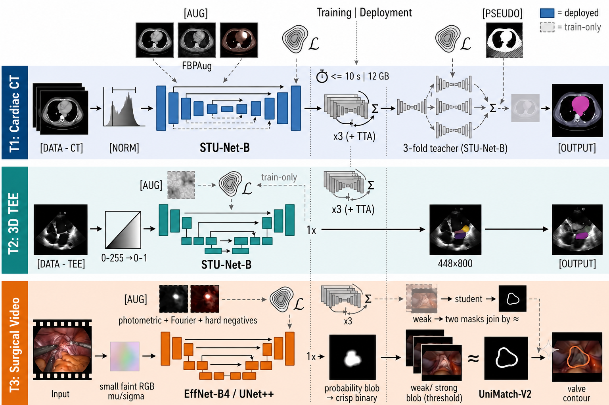
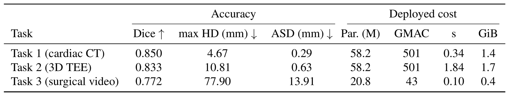
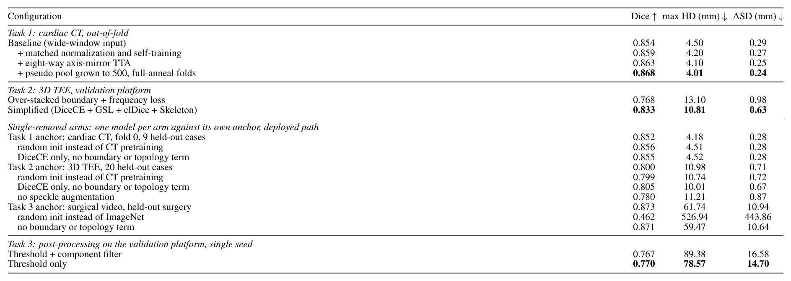
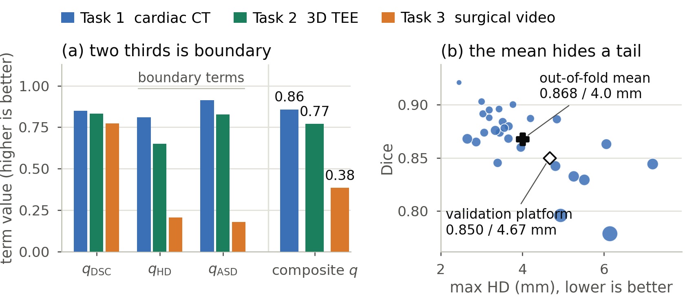

BEAT
BEAT: Boundary-aware Efficient Anatomy-Transfer for Multimodal Mitral Valve Segmentation
One recipe, three modalities.
Boundary losses at train time only.
Plain segmentation CNNs at deployment.
01 / ABSTRACT
Abstract
Mitral valve repair is planned and guided by three very different images of the same anatomy: preoperative cardiac computed tomography (CT), intraoperative 3D transesophageal echocardiography (3D TEE), and the surgeon’s view of the valve. Delineating the valve consistently in all three is the perception layer on which a patient-specific valve model rests, yet annotations are scarce and the gap between modalities is wide. We introduce BEAT, a boundary-aware efficient anatomy-transfer recipe instantiated once per modality: a CT-pretrained STU-Net for the volumetric tasks and an ImageNet-pretrained EfficientNet for video, train-only distance and topology losses, augmentation matched to the physical shift, and every expensive component confined to training, leaving a single-pass model that segments a CT case in 0.34 s with 1.4 GiB. On the MICCAI 2026 MVAA challenge, BEAT achieves Dice 0.85 on CT, 0.83 on 3D TEE, and 0.77 on surgical video. Ablations read against fold and seed variation show what carries each modality: transfer on video, physics-matched augmentation on ultrasound, and a post-processing rule that never erases a weak prediction.

02 / METHOD
Method
- T1 (CT). STU-Net (pretrained on TotalSegmentator) is fine-tuned with CT intensities clipped to
the foreground window used during STU-Net pretraining (
[-99, 646]HU). Three fold teachers label the unlabeled CT pool. Their pseudo-labels are confidence-gated (stricter near the boundary), and the students are retrained on labeled plus pseudo-labeled data. Training uses DiceCE + boundary + skeleton-recall + cbDice + edge-consistency losses. Inference averages 8 members with 8-way flip TTA, then keeps the largest component and applies morphological closing. - T2 (3D TEE). STU-Net-B with per-case intensity normalization and a compact loss: DiceCE, Generalized Surface Loss, clDice and Skeleton Recall. Inference averages 3 seeds over two sampling geometries with 8-way flip TTA, then applies per-class connected-component filtering and closing.
- T3 (surgical video). UNet++ with an ImageNet EfficientNet-B4 encoder, trained with heavy photometric augmentation, synthetic surgical corruptions, and UniMatch-V2 weak-to-strong consistency on the unlabeled video pool. Inference is a three-model threshold cascade with no TTA.
All boundary and topology terms are training-only losses, so the deployed networks are plain segmentation CNNs.
03 / RESULTS
Results from the paper
Tables and figures as they appear in the paper.



04 / MORE RESULTS
More from the code release
Results (validation)
| Task | Dice ↑ | max HD (mm) ↓ | ASD (mm) ↓ |
|---|---|---|---|
| T1 cardiac CT | 0.850 | 4.67 | 0.29 |
| T2 3D TEE | 0.833 | 10.81 | 0.63 |
| T3 surgical video | 0.772 | 77.90 | 13.91 |

Fig. 2. (a) The validation results split into the terms of the challenge score. (b) Task 1 per-case out-of-fold Dice against max HD, with marker area growing with ASD.
05 / CODE
Code and usage
Installation
git clone https://github.com/adinathdukre/BEAT-MVAA.git
cd BEAT-MVAA
conda create -n beat python=3.10 -y
conda activate beat
pip install -r requirements.txt
pip install -e .
Checkpoints
Download the trained weights into weights/:
pip install -U "huggingface_hub[cli]"
huggingface-cli download adidukre/BEAT-MVAA --local-dir weights
weights/
├── task1/ L_f0.pt L_f1.pt L_f2.pt L_all.pt L_s2026.pt (STU-Net-L)
│ B_f0.pt B_f1.pt B_f2.pt (STU-Net-B)
├── task2/ s42.pt s43.pt s44.pt (STU-Net-B)
└── task3/ s42.pt s44.pt guard_e37.pt (UNet++ / EfficientNet-B4)
T1 members are dispatched by filename prefix (L_* for STU-Net-L, B_* for STU-Net-B). Every
.pt file in a task folder becomes part of that task's ensemble.
To train from scratch you also need the STU-Net base weights (base_ep4k.model,
large_ep4k.model, huge_ep4k.model) from uni-medical/STU-Net,
placed under
$MVAA_CKPT_DIR/STU-Net/.
Data
Get the MVAA dataset from the challenge organizers (Codabench 15662); it is not redistributed here.
/path/to/MVAA/
├── images/ # unlabeled surgical video pool (T3)
└── reference_data/
├── t1_ct/{train,val}/{images,labels}
├── t2_tee/{train,val}/{images,labels}
└── t3_vid/{train,val}/{images,labels}
export MVAA_DATA_ROOT=/path/to/MVAA
export MVAA_RUNS_DIR=/path/to/runs # training outputs
export MVAA_CKPT_DIR=/path/to/pretrained # STU-Net base weights (training only)
Any config value can be overridden from the command line as key=value (OmegaConf dotlist).
Inference
The entry point runs all three tasks and writes the official submission layout
(t1_ct/, t2_tee/, t3_vid/, each with a task{N}_predictions.json).
MVAA_APP_DIR=$PWD \
MVAA_WEIGHTS_DIR=$PWD/weights \
MVAA_INPUT_DIR=/path/to/input \
MVAA_OUTPUT_DIR=/path/to/output \
python scripts/run_inference.py
The input folder uses t1_ct/images/*.nii.gz, t2_tee/images/*-US.nii.gz and
t3_vid/images/**/*.png, or an optional test_cases.json manifest. Set MVAA_TASKS=1,3 to run only
some tasks.
🐳 Docker
docker build -t beat-mvaa .
docker run --rm --gpus all --network none \
-v /path/to/input:/input:ro -v /path/to/output:/output \
beat-mvaa
Single-model prediction on a labeled split
python -m task1.predict --ckpt weights/task1/B_f0.pt --split val --out /path/to/pred_t1 model.stunet_size=B
python -m task2.predict --ckpt weights/task2/s42.pt --split val --out /path/to/pred_t2
python -m task3.predict --ckpt weights/task3/s42.pt --split val --out /path/to/pred_t3 model.encoder_weights=null
Training
T1 and T2 use torchrun (DDP/FSDP). T3 trains on one GPU.
Task 1 (CT, semi-supervised)
The teacher distills features from CT-FM, which needs pip install lighter-zoo (weights are fetched from
Hugging Face). Pass teacher.distill_ct=false to skip it.
# 1. fold teachers (repeat for fold=0,1,2)
torchrun --standalone --nproc_per_node=4 -m task1.train_teacher --exp teacher_f0 \
data.n_folds=3 data.fold=0
# 2. ensemble pseudo-labels on the unlabeled CT pool
python -m task1.make_pseudolabels \
--ckpt $MVAA_RUNS_DIR/task1/teacher_f0_*/checkpoints/teacher_best.pt \
--ckpt $MVAA_RUNS_DIR/task1/teacher_f1_*/checkpoints/teacher_best.pt \
--ckpt $MVAA_RUNS_DIR/task1/teacher_f2_*/checkpoints/teacher_best.pt \
--out_dir $MVAA_RUNS_DIR/pseudolabels/t1_ct_r2_hq500
# 3. students (STU-Net-L shown; use model.stunet_size=B for the B members)
torchrun --standalone --nproc_per_node=4 -m task1.train_student --exp L_f0 \
model.stunet_size=L model.stunet_ckpt=$MVAA_CKPT_DIR/STU-Net/large_ep4k.model \
data.n_folds=3 data.fold=0 train.batch_size=1
Task 2 (3D TEE)
torchrun --standalone --nproc_per_node=4 -m task2.train --exp s42 seed=42
Task 3 (surgical video)
python -m task3.train_student --exp s42 seed=42
python -m task3.train_student --exp guard_e37 seed=42 train.epochs=40 data.holdout_video=675A
Each run writes config.yaml, logs and checkpoints to $MVAA_RUNS_DIR/<task>/<exp>_<git-sha>/. Copy the selected best.pt files into weights/<task>/ to deploy.
Repository Structure
BEAT-MVAA/
├── common/ # losses, metrics, post-processing, sliding window, I/O, model registry
├── task1/ # CT: teacher, pseudo-labels, student, predict
├── task2/ # 3D TEE: train, predict
├── task3/ # video: semi-supervised student, predict
├── scripts/ # ensemble inference (run_inference.py) and per-task ensemble predictors
└── configs/ # OmegaConf YAML configs (paths, common, task1-3)
06 / CITATION
BibTeX
@inproceedings{regebeat,
title={BEAT: Boundary-aware Efficient Anatomy-Transfer for Multimodal Mitral Valve Segmentation},
author={Rege, Atharva Atul and Dukre, Adinath Madhavrao and Shah, Sarth Santosh and Razzak, Imran},
booktitle={The 1st MICCAI Workshop on Medical World Models},
year={2026},
url={https://openreview.net/forum?id=yRMVmTyr3S}
}Acknowledgments
This work builds on STU-Net / MedIM, segmentation-models-pytorch, MONAI and UniMatch-V2. We thank the MVAA 2026 organizers for the data and the evaluation.
Contact
For questions or collaboration, please open an issue or reach out to Adinath Madhavrao Dukre.
License
Code is released under the MIT License. The MVAA data and third-party pretrained weights keep their own licenses.
BEAT is intended for research only. It is not approved for clinical use and must not inform any diagnostic or treatment decision.